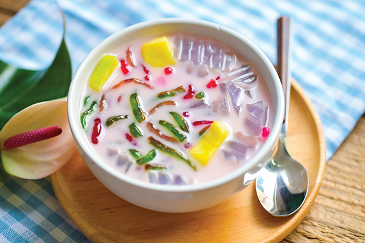

Ruam Mit is a popular Thai dessert made with ingredients such as coconut milk, sugar, tapioca pearls, corn, lotus root, sweet potatoes, beans, and jackfruit. Each bowl typically includes starchy noodles that are flavored and colored with various ingredients, and which may come in the shape of thin strips or more elaborate decorative forms.
Meal prep time : 1 hour
Servings : 6